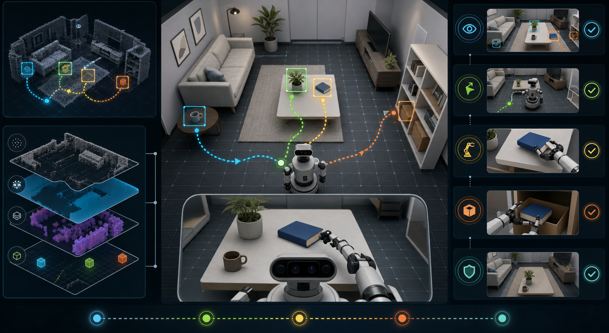
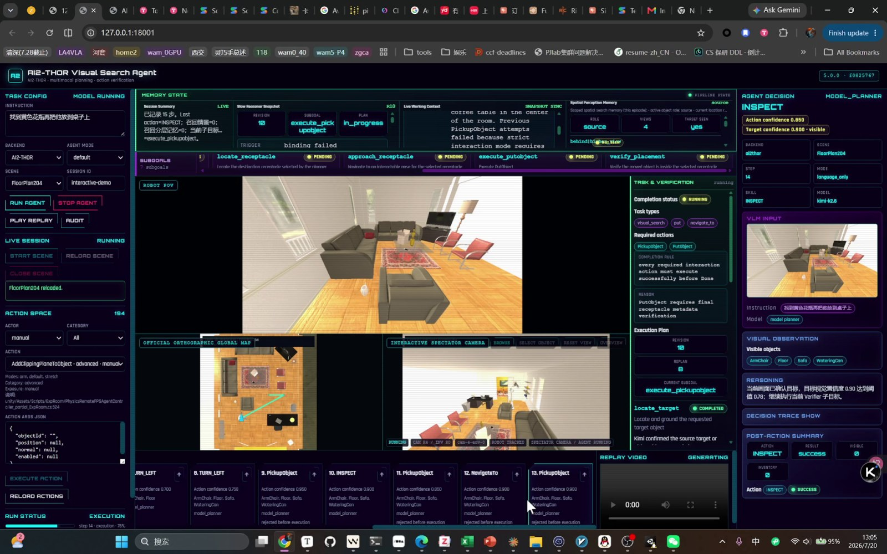
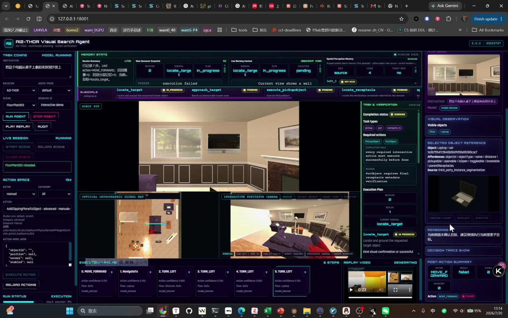
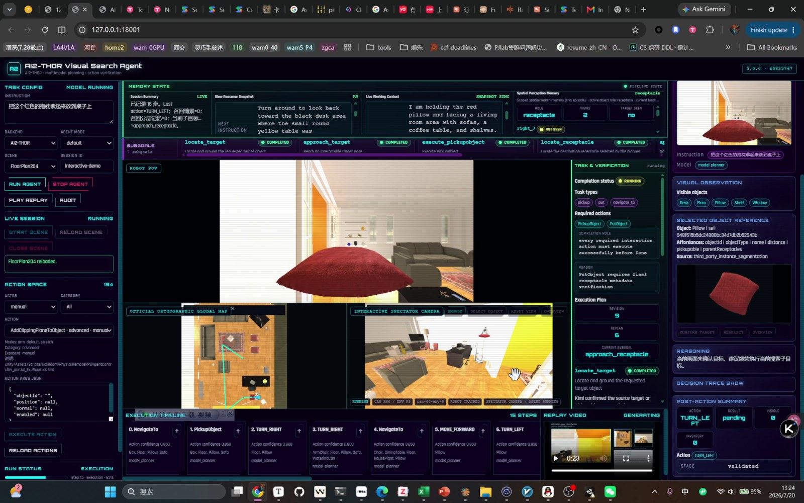

01 / Reliability contract
模型说“完成”，不等于任务真的完成。
系统把开放式语言推理约束在可审计的动作协议中。每个动作都经过目标绑定、合法性检查、环境后置条件和任务验证器；失败反馈进入工作记忆，触发恢复或重新规划。
TASK
PERCEIVE
PLAN
EXECUTE
VERIFY
02 / Search intelligence
LOOK.
PLAN.
PROVE.
3D 场景中的绿色轨迹表现从未知空间到目标物体的搜索过程。层次记忆、空间记忆和情景记忆共同减少重复探索；网页只呈现决策摘要与证据，不暴露隐藏思维链。
3 layers层次化记忆
RGB-D空间占据栅格
Open → Pick → Put连续交互链
MP4 audit完整执行回放

AI2-THOR / INTERACTIVE SEARCH


